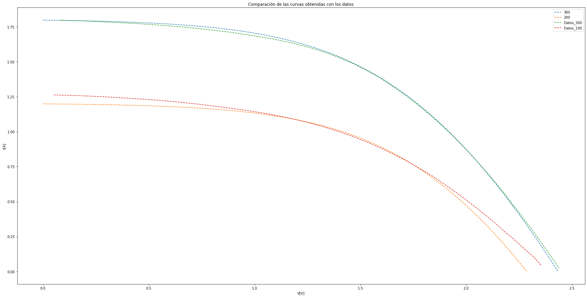
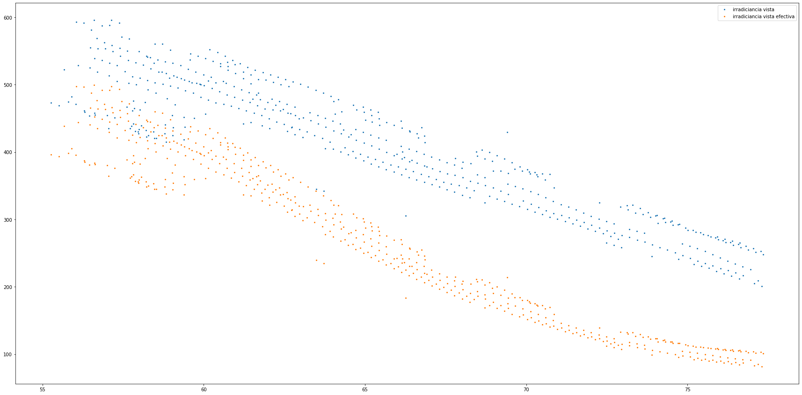
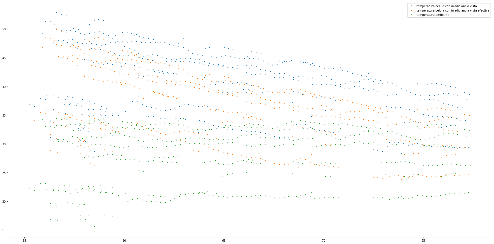
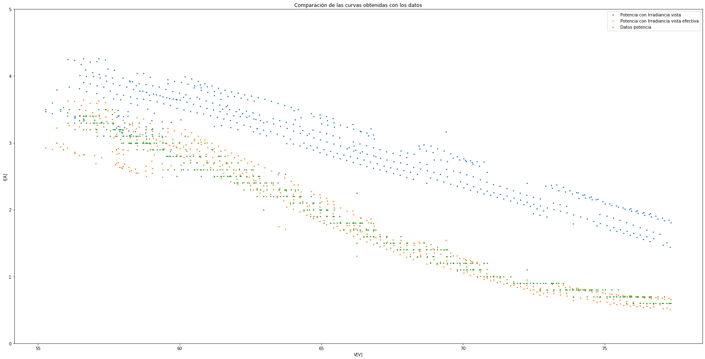

In [3]: runfile('C:/Users/juanj/OneDrive/Escritorio/repositorio_tfg/Static_Si.py', wdir='C:/Users/juanj/OneDrive/Escritorio/repositorio_tfg')
Reloaded modules: Error
C:\Users\juanj\OneDrive\Escritorio\repositorio_tfg\Static_Si.py:168: SettingWithCopyWarning:
A value is trying to be set on a copy of a slice from a DataFrame.
Try using .loc[row_indexer,col_indexer] = value instead
See the caveats in the documentation: https://pandas.pydata.org/pandas-docs/stable/user_guide/indexing.html#returning-a-view-versus-a-copy
df_filt_Si['Irra_vista_efectiva (W/m2)']=((df_filt_Si['Irra_vista (W/m2)'].values)*Error.calc_iam_Si(df_filt_Si['aoi'].values,'Tercer grado'))
C:\Users\juanj\OneDrive\Escritorio\repositorio_tfg\Static_Si.py:169: SettingWithCopyWarning:
A value is trying to be set on a copy of a slice from a DataFrame.
Try using .loc[row_indexer,col_indexer] = value instead
See the caveats in the documentation: https://pandas.pydata.org/pandas-docs/stable/user_guide/indexing.html#returning-a-view-versus-a-copy
df_filt_Si['ISC_Si/Irra_vista_efectiva (A m2/W)']=((df_filt_Si['ISC_measured_Si (A)'].values)/(df_filt_Si['Irra_vista_efectiva (W/m2)'].values))
C:\Users\juanj\Anaconda3\lib\site-packages\pandas\core\series.py:679: RuntimeWarning: overflow encountered in exp
result = getattr(ufunc, method)(*inputs, **kwargs)
El error cuadrático medio de la aproximación es de: 0.19341590956909396




In [4]: